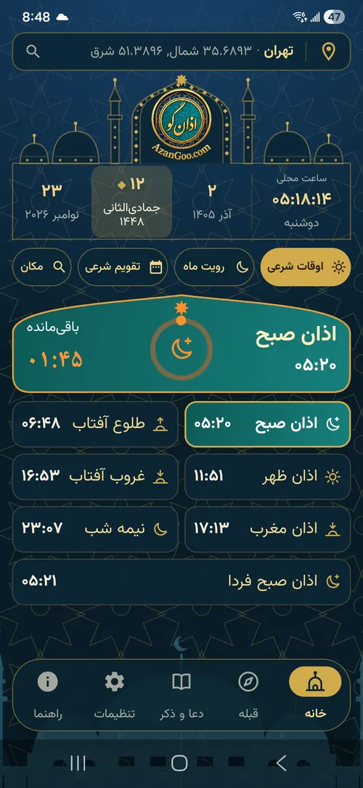

صدای اذان، سر وقتِ شما
اوقات شرعی بر پایهٔ محاسبهٔ نجومی برای مکان شما، اذان در پسزمینه حتی وقتی برنامه بسته است، دعا پیش و پس از اذان، رؤیت هلال و قبلهنما. همه در یک برنامهٔ رایگان و بدون تبلیغات.

چرا اذان گو؟
- آیا در منطقهای زندگی میکنید که صدای اذان کمتر به گوش میرسد؟
- مدتهاست صدای دلنشین اذان در خانهتان شنیده نمیشود؟
- به دلیل مشغلههای کاری و روزمره، نماز اول وقت را از دست میدهید؟
دیگر نگران نباشید؛ اپلیکیشن اذانگو دقیقاً برای شما طراحی شده است تا در هر زمان و مکان، یادآور دقیق و آرامشبخش اوقات شرعی باشد.
همین حالا اذانگو را دانلود کنید و هیچ وقت نماز اول وقت را از دست ندهید.
شرکت در آزمایش برنامهسه ویژگی که این برنامه را متفاوت میکند
چند ثانیه نگاه کنید، بقیهاش را در خود برنامه ببینید. روی هر مورد بزنید تا صحنهاش باز شود.


از کجا شروع کنیم؟
هر بخش را در یک صفحهٔ جدا، با توضیح و تصویر کامل ببینید.
اذان و اوقات شرعی
اوقات برای مکان شما، پخش یا اعلان برای هر اذان، دعا قبل و بعد از اذان، دعاهای رمضان و روشهای محاسبه.
مشاهده ←
رؤیت ماه و ماه قمری
ماه همین امشب، بهترین زمان و جهت دیدن هلال و پیشبینی ۲۹ یا ۳۰ روزه بودن ماه.
مشاهده ←
ویجت و اعلانها
اذان بعدی و شمارش معکوس روی صفحهٔ اصلی گوشی، ویجت ماه و یادآور پیش از اذان.
مشاهده ←
سایر امکانات
قبلهنما، دعا و زیارت، تسبیح، چهار زبان، پوسته، قالب ساعت، کار بدون اینترنت و حریم خصوصی.
مشاهده ←هر آنچه از یک برنامهٔ اذان میخواهید
از اذان سر وقت تا رؤیت هلال و قبلهنما، همه در یک برنامه. روی هر مورد بزنید تا جزئیاتش را ببینید.
اوقات شرعی برای مکان شما
بر پایهٔ محاسبهٔ نجومی با طول و عرض جغرافیایی محل اقامت شما.
اذان سر وقت
در پسزمینه و روی صفحهٔ قفل، حتی وقتی برنامه باز نیست.
پخش، اعلان یا خاموش
برای هر اذان جداگانه تعیین کنید؛ مثلاً ظهر فقط اعلان بیاید.
دعا قبل و بعد از اذان
دعای روزهای هفته، فرج و عهد را به دلخواه روشن یا خاموش کنید.
دعاهای ویژهٔ رمضان
دعای سحر، دعای افطار و دعای مخصوص ماه مبارک.
رؤیت ماه در لحظه
آسمان و ماه همین امشب، با درصد روشنایی، فاز و ساعت طلوع و غروب.
بهترین زمان و جهت رؤیت
ساعت مناسب دیدن هلال بعدی، جهت و ارتفاع آن در آسمان شما.
پیشبینی ماه قمری
با معیار عودة، ۲۹ یا ۳۰ روز بودن ماه را برای مکان خودتان ببینید.
شمارش معکوس اذان بعدی
هم در برنامه، هم در نوتیفیکیشن؛ بدون باز کردن برنامه.
ویجت اوقات شرعی و ماه
اذان بعدی و فاز ماه را روی صفحهٔ اصلی گوشی ببینید.
قبلهنما
نقشه، ماهواره، قطبنما و نمای خیابان، با فاصله تا کعبه.
تسبیح، دعا و زیارت
متن عربی و ترجمه با ظاهر قابل تنظیم برای خواندن.
روش محاسبهٔ دلخواه
پیشفرض بر اساس مکان شما و هر زمان قابل تغییر: اذان گو، جعفری، تهران، کراچی و…
تقویم و مناسبتها
شمسی، قمری و میلادی، هفتگی و ماهانه، با وقایع هر روز و خروجی PDF.
مکان بهدلخواه
GPS، جستوجوی شهر یا آدرس، ضربهٔ دوبل روی نقشه یا وارد کردن مختصات.
زبان و پوسته
فارسی، انگلیسی، اردو و عربی؛ پوستهٔ تیره، روشن، سبز یا مشکی و ساعت ۱۲ یا ۲۴ ساعته.
بدون اینترنت
اوقات، قبله، تقویم و اذان با صداهای داخل برنامه بدون اینترنت کار میکنند.
حریم خصوصی
بدون حساب کاربری، تبلیغ و ابزار آمارگیری. مکان و تنظیمات فقط روی گوشی میماند.
صداهای اذان
سه صدا داخل برنامه است و صداهای بیشتری برای شنیدن و دانلود دارد.
یادآور پیش از اذان
اعلان بیصدای شمارش معکوس، ۵، ۱۰ یا ۱۵ دقیقه قبل از هر اذان.
همهٔ صداها در اختیار شماست
همهٔ صداهای خودکار برنامه قابل تنظیماند. هر زمان خواستید، در تنظیمات میتوانید همهٔ صداهای خودکار، از جمله اذان و دعا، را خاموش کنید و فقط برای دیدن اوقات شرعی و رؤیت ماه از برنامه استفاده کنید.
طراحیشده برای حس و حال اذان
به آزمایشکنندگان اذان گو بپیوندید
اذان گو در حال آزمایش بسته در گوگل پلی است. اگر آزمایشکنندهاید، با چهار قدم ساده برنامه را نصب کنید و نظرتان را برایمان بفرستید.
- ۱ایمیل را وارد کنید. ایمیل حساب گوگلی را که روی گوشی اندرویدتان وارد شده است در کادر زیر بنویسید و دکمهٔ «درخواست دسترسی تست» را بزنید.
- ۲پیام را «ارسال» کنید. برنامهٔ ایمیل شما با یک پیام آماده باز میشود. حتماً دکمهٔ Send را بزنید؛ تا ارسال نکنید، درخواستتان به دست ما نمیرسد.
- ۳منتظر لینک بمانید. ما ایمیل شما را دستی به فهرست آزمایشکنندگان اضافه میکنیم و لینک دانلود را به همان ایمیل میفرستیم. ممکن است کمی طول بکشد؛ پوشهٔ اسپم را هم نگاه کنید.
- ۴نصب کنید. لینک را با همان حساب گوگل باز کنید، دکمهٔ آبی Download test app را بزنید و اذان گو را از گوگل پلی نصب کنید.
یک قدم مانده: ایمیل را ارسال کنید
درخواست شما هنوز برای ما نرسیده است. در برنامهٔ ایمیلی که باز شد دکمهٔ Send را بزنید. اگر چیزی باز نشد، یکی از راههای زیر را امتحان کنید:
درخواست شما ثبت شد
بهمحض اینکه ایمیل را به فهرست اضافه کنیم، لینک دانلود برای همین ایمیل میآید. لطفاً کمی صبر کنید و پوشهٔ اسپم را هم نگاه کنید.
فقط ایمیل حساب گوگلی را بنویسید که روی گوشی اندرویدتان وارد شده است. این صفحه ایمیل شما را خودش ذخیره یا ارسال نمیکند؛ ارسال از برنامهٔ ایمیل خودتان انجام میشود. هر مشکلی داشتید به app@azangoo.com بنویسید.